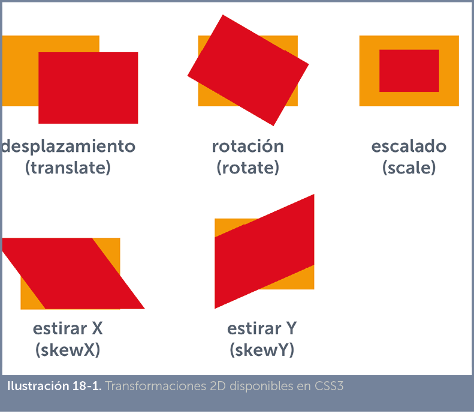
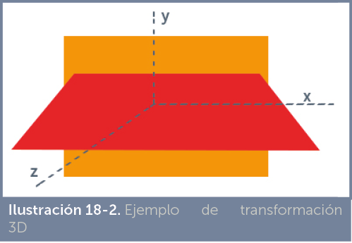
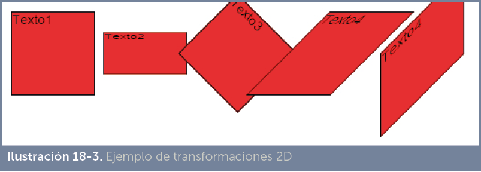
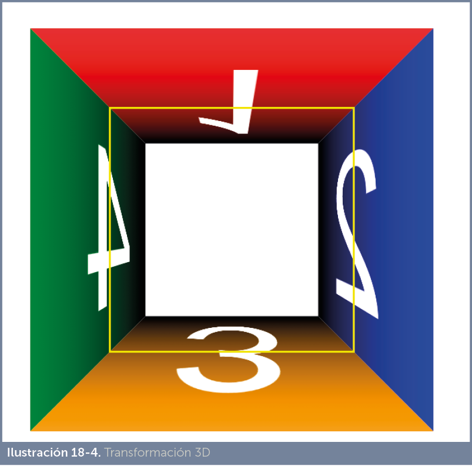

Por transformaciones en CSS se entiende las operaciones realizadas mediante la propiedad transform, la cual permite las operaciones típicas vectoriales sobre un elemento HTML. En realidad hay dos tipos de transformaciones, las transformaciones 2D, que sólo utilizan los ejes horizontal y vertical para transformar, lo que implica que sólo realiza transformaciones en el plano; y las transformaciones 3D en las que interviene el eje Z causando la ilusión de que el elemento tenga profundidad.
Las transformaciones 2D son:

Las transformaciones 3D nos permiten simular profundidad en los elementos:

A la propiedad transform se la acompaña de una función que es la responsable de realmente el elemento. Esa función puede ser:
Los navegadores actuales soportan la propiedad transform, pero los de tipo webkit (Chrome y Safari) imponen su versión llamada –webkit-transform. También Internet Explorer usa su propia versión (aunque ahora ya usa la estándar) y hasta hace poco hacía lo mismo Firefox.
<!doctype html>
<html lang=”es”> <head> <meta charset=”UTF-8”> <title>Document</title> <style> div{
width:100px;
height:100px;
float:left; margin:5px;
background-color: yellow;
border:1px solid black;
} #d2{
transform: scale(1,.5);
} #d3{
transform:rotate(45deg);
} |
#d4{
transform:skewX(-45deg);
} #d5{
transform:skewY(-45deg);
} </style> </head> <body> <div id=”d1”>Texto1</div> <div id=”d2”>Texto2</div> <div id=”d3”>Texto3</div> <div id=”d4”>Texto4</div> <div id=”d5”>Texto5</div> </body> </html> |
Resultado:

En este caso hay que tener en cuenta que permiten distinguir el eje sobre el que se aplican. Las posibles funciones que podemos utilizar en la propiedad transform para conseguir transformaciones 3D son:
Hay otras propiedades relacionadas con las transformaciones 3D:
Ejemplo transform-origin:200px 100px;
A continuación se muestra un ejemplo con transformaciones 3D. Se trata de cuatro capas interiores a un contenedor. Las cuatro capas se colocan llenando dicho contenedor (usando posicionamiento absoluto), después se rotan en perspectiva formando las tapas de un cubo tridimensional visto en perspectiva.
<!doctype html>
<html lang=”es”>
<head> <meta charset=”UTF-8”> <title>Ejemplos 3D</title> <style> #contenedor{
position:fixed;
left:400px;
top:400px;
width:400px;
height:400px;
border:4px solid yellow;
} #contenedor div{
position:absolute;
width:100%;
height:100%;
left:0;
top:0;
font-size:350px;
text-align: center;
color:white;
} #capa1{
background:linear-gradient(black, red);
} #capa2{
background: linear-gradient(-90deg,black, blue);
} #capa3{
background: linear-gradient(0deg,black, orange); |
} #capa4{
background: linear-gradient(90deg,black, green);
} </style> </head> |
<body> <div id=”contenedor”> <div id=”capa1”>1</div>
<div id=”capa2”>2</div>
<div id=”capa3”>3</div>
<div id=”capa4”>4</div>
</div> </body> </html> |
El resultado de este código es el siguiente:

En la imagen queda pintado con un borde amarillo la posición original de las capas interiores (en definitiva la forma de su contenedor), antes de la transformación.